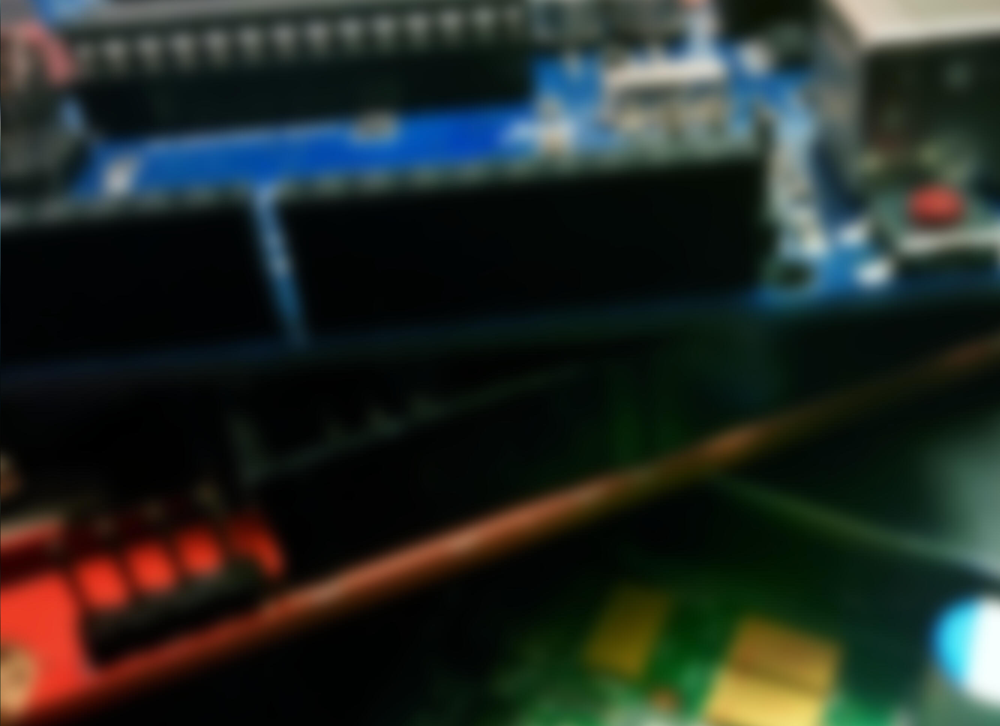

Modern
Solving todays issues and tomorrows dreams with proven methodologies and underlying modern technology.
Diverse
Hardware devices, mobile apps, desktop software or deploying web apps; Bytewise has the experience to implement your I/O.

Complete
Bytewise I/O aims to provide turnkey solutions through efficient scalable ecosystems designed around easily maintainable and long lasting projects.